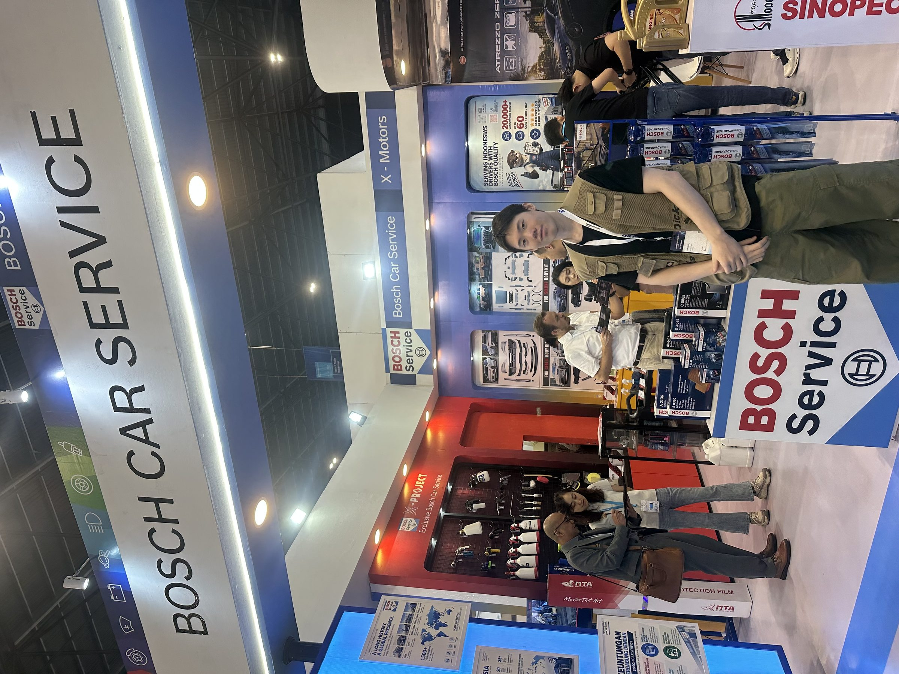
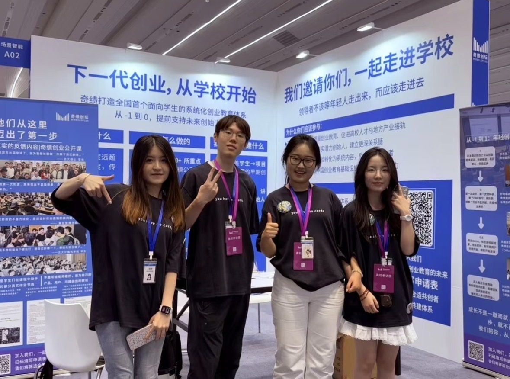
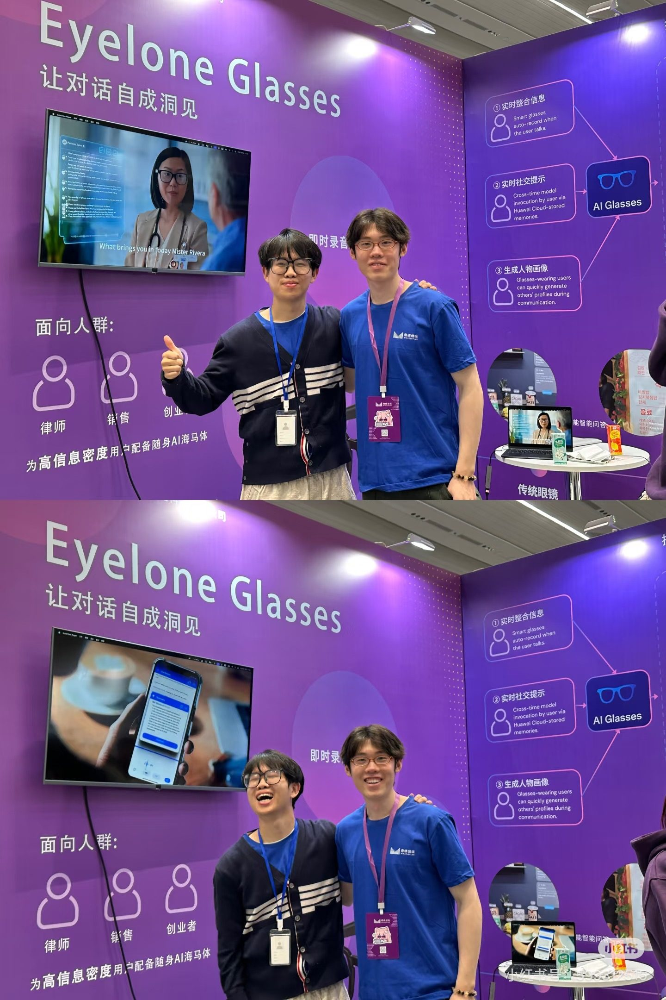

从增长到出海：
在真实市场里做事。
不想把这页写成简历。更想说清楚：我现在在哪儿、之前走过哪些路、以及为什么会相信这些事值得做。
现在 · 曾经
现在
2026 年硕士毕业后加入 X-motors（博世印尼国家总代）做汽车后市场出海——依托国内强大的汽配供应链，从印尼起步做汽车维修改装的加盟生意，抢占印尼增量市场。目前在一个跨部门增长团队，负责广告投放、市场策略与用户增长，每天和 Meta、Google、TikTok、客服系统、Google 表单打交道。

曾经
2025 年春，从北京东五环每天通勤一个半小时到五道口，在奇绩创坛（MiraclePlus）实习，跟进了 AI 发展进化的全过程，与创业导师、优秀的创业者面对面——那时就不再想卷现存的就业市场，而是想亲手验证一遍从发现需求到交付产品的全闭环。实习期间参与了两次创业营，见证 50+ 项目落地，也把创业讲座带到全国 11 座城市、28 所高校，在大学校园里寻找那些可能做出独角兽公司的年轻人。
几乎同一时间，法国交换期间认识的 99 级校友找我重新恢复北京办事处的运营——说干就干，用三个月组建团队、租办公室、完成税务法务合规，把牌子重新打响，运营欧洲高端精品政企小团业务（Europa Holiday Travel Agency）。

在高校里找人的那段日子
2025 年上半年，走访了 11 个城市、28 所高校，调研创新教育的现状。那段时间常想的一个问题是：怎样才能让更多像梁文锋、王兴兴这样的人，更早地在高中或大学校园里被发现。
2025 秋季的创业营，我以高校组 VIP 的身份回看了一场"创业春晚"——三个多小时里看完 54 个项目路演，从电子宠物社交、旅游 Pilot、癌症患者社区，到预防疾病的智能戒指、桌面陪伴机器人、超低空卫星、捕鱼、AI 农业、仿生扑翼……创业者们对世界的想象力，永远比预期的更野。
